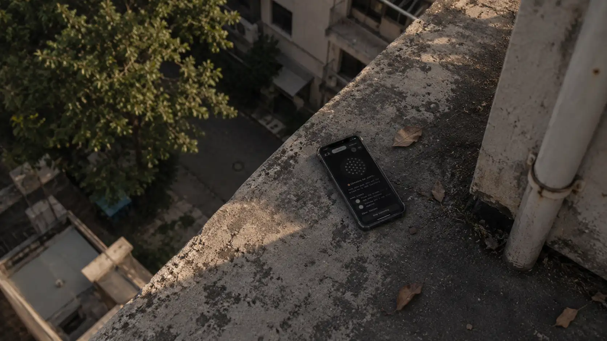

Dead Air turns an emergency alert into a few seconds of sound. Any phone with this page open hears it and shows the alert in the reader’s own language, with no network.
Warnings that reach people save lives. Countries with substantial to comprehensive early warning systems recorded disaster deaths 6.1 times lower than countries with limited to moderate ones.
What happened: 1.2 million people were evacuated. 64 people died. A super cyclone on the same coast in 1999 killed 9,885 by the official count.Sources:UNDRR, 2019(same link) · World Bank, 2019
The gap: Even then, people in some villages said no message reached them about when the storm would land.Source:Hindustan Times, 15 May 2019
Bhubaneswar at night, 30 April 2019 · NASA Earth Observatory (Lauren Dauphin), with Black Marble data from NASA Goddard and Landsat data from USGS · NASABhubaneswar at night, 5 May 2019 · NASA Earth Observatory (Lauren Dauphin), with Black Marble data from NASA Goddard and Landsat data from USGS · NASA
City lights around Bhubaneswar and Cuttack, before and after Cyclone Fani.
Sound and people carried that warning. Dead Air adds one small thing: the sound becomes text, an icon and a voice on the phone, in the listener’s own language.
04
How it works
Send.Someone picks an alert: what happened, how urgent it is, what to do, and where. Dead Air packs it into 40 bytes or less.
Sound.The alert becomes a few seconds of sound, like an old modem. It is made to be played over a radio broadcast or a loudspeaker, or straight from a phone.
Hear.Any phone with the Listen page open hears it through the microphone and checks it. It shows the alert with an icon, in English or Hindi, and can read it aloud. One tap passes it on to the next phone.

Illustration · Photo by Vedas Dixit
05
An old idea, brought back
Sending data as sound is not new. It is how computers first went online, and how radio alerts have worked for decades.
1970s.Acoustic couplers. A computer talks through a telephone handset, by sound.Acoustic coupler modem · Photo by secretlondon123, CC BY-SA 2.0, resized · Wikimedia Commons
1997.In the United States, radio and TV alerts start with a short burst of coded sound that a receiver can read. It is still in use.Source:47 CFR 11.31
2026.Dead Air does the same in a web page, on a smartphone.
"But the radio stayed on."
Sibyle Veil, head of Radio France, on the April 2025 blackout in Spain and Portugal, when power, mobile networks and the internet failed.
An expired alert is never shown as current. Every alert shows when it was sent.
A test is always marked TEST.
After the first load, it works with no network and never contacts any other site.
Microphone sound is never recorded, stored or uploaded.
Every alert has an icon and text in every language the app ships.
07
What it is not
It is a prototype. It has never been used in a real disaster.
It does not replace official alerts. India’s SACHET system has sent over 134 billion SMS alerts in more than 19 languages. Dead Air is a backup for when phones lose the network.Source:PIB
It needs a smartphone with the Listen page open and the screen on. Load the page once while you still have a connection.
It needs a working radio, loudspeaker or phone nearby. Radio often outlasts mobile networks, but not always. Weeks after Hurricane Maria, about one-third of Puerto Rico’s AM and FM stations were still off air.Source:FCC, 2018
It cannot help when no warning is sent, or when it is sent too late. In Maui in 2023 the sirens were never sounded. In Valencia in 2024 the phone alert went out after the flooding had begun.Sources:NBC News, 2023 · Public Health Reviews, 2025
It cannot yet prove who sent an alert.
English and Hindi so far.
Tested so far:
2.4 m (8 ft), heard every time.
6.4 m (21 ft), next room through an open doorway, 3 of 4 alerts received.
Sound played by MacBook Pro M4, built-in speakers, full volume, about 85 dB, heard by Samsung Galaxy S25 Ultra. These were informal tests.
fani-before: Bhubaneswar at night, 30 April 2019 · NASA Earth Observatory (Lauren Dauphin), with Black Marble data from NASA Goddard and Landsat data from USGS · NASA
fani-after: Bhubaneswar at night, 5 May 2019 · NASA Earth Observatory (Lauren Dauphin), with Black Marble data from NASA Goddard and Landsat data from USGS · NASA
acoustic-coupler: Acoustic coupler modem · Photo by secretlondon123, CC BY-SA 2.0, resized · Wikimedia Commons
illustration-phone: Illustration · Photo by Vedas Dixit
Dead Air is a prototype and a backup channel. Always follow official alerts.